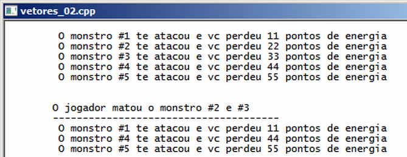

Curso completo de linguagem C++
Gameprog - Escola de programação de jogos digitais
Contato: gameprog.br@gmail.com
track19.html
19. STL 2/5 <vector>
19.1 Visão geral
Comumente nos jogos ocorre o processo de criação e destruição de elementos
como criação de monstros para atacar o jogador e remoção dos mesmos quando
o jogador os eliminam; outro exemplo comum, ocorre quando o jogador
pressiona um botão de tiro no joystick, aonde os tiros que são criados devem
ser adicionados em uma lista para serem manipulados um a um e estes mesmos
tiros são removidos da lista quando eles ultrapassam o limite visível da tela
ou outra condição que justificam a remoção dos mesmos.
Nestes casos citados acima é muito comum o uso de um vetor de ponteiros para
estes objetos.

// vetores_02.cpp
// Ilustra o uso de vetores - parte 2
#include <iostream>
#include <vector>
using namespace std;
// ----------------------- classse sistema ---------------------------------
// ------ demonstra o uso de funções estáticas numa classe -----------------
class Sistema {
public:
static void inicio() {
system("color f0"); system ("title vetores_02.cpp");
cout << "\n";
} // fim do metodo: inicio()
static void fim() {
cout << endl;
system("pause");
} // fim do metodo: fim()
}; // fim da classe sistema
// ----------------------- classe monstro ---------------------------------
class Monstro {
public:
int m_estrago;
int m_id;
static int id_automatico;
Monstro(int estrago = 10): m_estrago(estrago) {
m_id = id_automatico;
id_automatico++;
} // fim do construtor
void atacar() {
cout << "\t O monstro #" << m_id << " te atacou e vc perdeu ";
cout << m_estrago << " pontos de energia" << "\n";
} // fim do método atacar()
}; // fim da classe monstro
int Monstro::id_automatico = 1;
vector<Monstro *> lista_monstro;
vector<Monstro *>::iterator ncx_iter;
// ------------------ funções para manipular monstros -------------------------
void mostra_monstro() {
for (ncx_iter = lista_monstro.begin(); ncx_iter != lista_monstro.end(); ncx_iter++)
(*ncx_iter)->atacar();
} // fim da funcao monstro
void monstro_vencido( int nMonstro) {
nMonstro = nMonstro - 1;
ncx_iter = lista_monstro.begin() + nMonstro;
lista_monstro.erase(ncx_iter);
} // fim da função: monstro_vencido()
// -------------------- início da função principal ---------------------------
int main() {
Sistema::inicio();
for (int ncx=0; ncx < 5; ncx++) {
int temp_estrago = (ncx+1) * 11;
lista_monstro.push_back( new Monstro( temp_estrago) );
}
for (int ncx=0; ncx < 5; ncx++) lista_monstro[ncx]->atacar();
cout << "\n\n \tO jogador matou o monstro #2 e #3\n";
cout << "\t--------------------------------------\n";
monstro_vencido (2); monstro_vencido(2);
mostra_monstro();
Sistema::fim();
} // endmain
Funções estáticas numa classe
// ----------------------- classse sistema ---------------------------------
// ------ demonstra o uso de funcões estáticas numa classe -----------------
class Sistema {
public:
static void inicio() {
system("color f0"); system ("title vetores_02.cpp");
cout << "\n";
} // fim do metodo: inicio()
static void fim() {
cout << endl;
system("pause");
} // fim do metodo: fim()
}; // fim da classe sistema
Aqui nós transformamos nossas funções básicas de inicialização e finalização
do nosso programa em métodos estáticos da classe Sistema. Como estas funções
são estáticas não é necessário instanciar objetos para utilizá-las, bastando
então precedê-las como o nome da classe desta forma:
Sistema::inicio();
Sistema::fim();
Implementação da classe monstro
// ----------------------- classse monstro ---------------------------------
class Monstro {
public:
int m_estrago;
int m_id;
static int id_automatico;
Monstro(int estrago = 10): m_estrago(estrago) {
m_id = id_automatico;
id_automatico++;
} // fim do construtor
Nossa classe Monstro não tem novidades. Definimos a propriedade m_estrago que
representa a capacidade de estrago que o monstro pode fazer no jogador, m_id que
é a identidade do monstro, e id_automatica que é uma variável estática para
assinalar automaticamente o m_id do monstro criado.
vector<Monstro *> lista_monstro;
Nesta linha declaramos um vetor de ponteiros do tipo monstro.
vector<Monstro *>::iterator ncx_iter;
Nesta linha declaramos o iterator ncx_iter para acessarmos os elementos do
vetor. Note que o tipo do iterator deve acompanhar o tipo do objeto que
vamos ter no vetor (Monstro *).
As duas linhas de código acima foram declaradas fora da função main() situação
que deixa acessível globalmente a lista de monstros e o iterator.
Funções para manipular monstros
void mostra_monstro() {
for (ncx_iter = lista_monstro.begin(); ncx_iter != lista_monstro.end(); ncx_iter++)
(*ncx_iter)->atacar();
} // fim da funcao monstro
Uma vez que nós definimos nossa lista de monstros como global podemos acessá-la
em qualquer função. Nesta função realizamos um ataque coletivo com todos os
monstros existentes. Veja que como nosso vetor é de ponteiros você deve usar
esta sintaxe no iterator para acessar propriedades e métodos:
(*ncx_iter)->atacar();
Removendo itens do vetor
void monstro_vencido( int nMonstro) {
nMonstro = nMonstro - 1;
ncx_iter = lista_monstro.begin() + nMonstro;
lista_monstro.erase(ncx_iter);
} // fim da funcao: monstro_vencido()
Você remove um elemento do vetor utilizando o método .erase( nPos ) passando
para ele como um argumento um iterator com a posição do item, é por isso
que utilizamos o iterator definido globalmente ncx_iter.
Na função main() utilizamos esta linha para apagar o segundo item do vetor:
monstro_vencido(2), ocorre que o vetor começa na posição 0 e é por isso
que reduzimos 1 de nMonstro nesta função.
Outro ponto muito importante é que quando deletamos um item do vetor, o
vetor tem o seu tamanho reduzido e os itens abaixo do item deletado são
movidos para as posições acima, é por isso que repetimos a linha
monstro_vencido(2) para remover o terceiro item considerando a quantidade
inicial do vetor.
Criando os monstros
for (int ncx=0; ncx < 5; ncx++) {
int temp_estrago = (ncx+1) * 11;
lista_monstro.push_back( new Monstro( temp_estrago) ); }
Com o bloco de código acima, adicionamos cinco monstros em nosso vetor com
cada monstro tendo uma capacidade de estrago diferente dado por (ncx+1) * 11;
for (int ncx=0; ncx < 5; ncx++) lista_monstro[ncx]->atacar();
Nesta linha os monstros atacam. Note a sintaxe de chamada ao método devido ao
uso de ponteiros.
E finalmente, o jogador elimina alguns monstros...
monstro_vencido (2); // Remove o segundo item e puxa os outros elementos...
monstro_vencido(2); // ...uma posição acima.
mostra_monstro();
Com as linhas acima removemos o segundo e terceiro item do vetor e na sequência
os mostramos os monstros vivos.